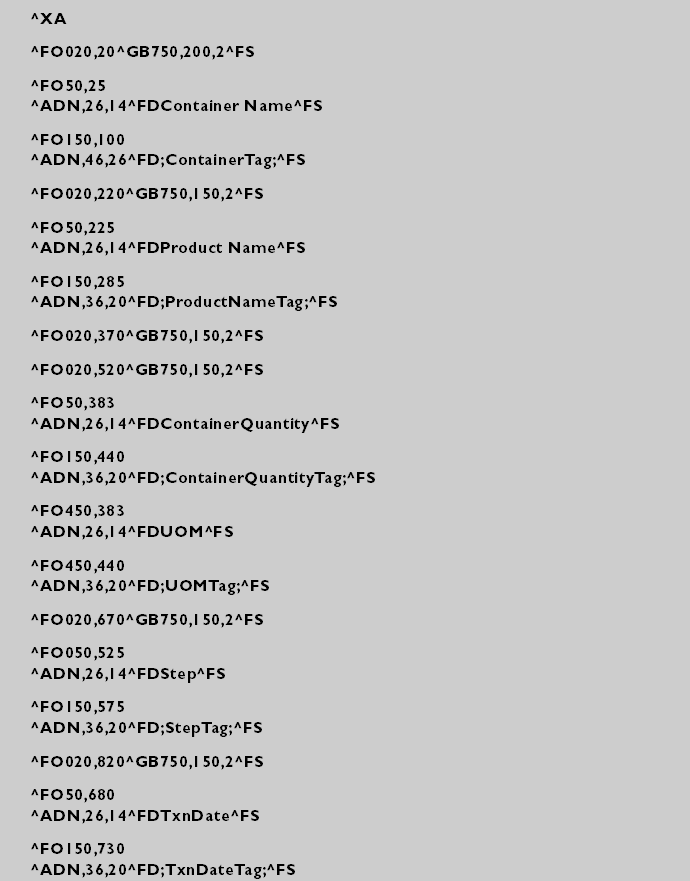

示例模板文件和标签
本主题提供了一个示例标签模板，并显示了使用该模板的打印标签的示例。
该文件代表 ZIH 公司 Zebra® 打印机的特有示例标签模板。

这是使用示例模板的打印标签的示例。

如果条形码标签打印软件（如 BarTender®）生成了二进制文件，则可以用 ZPL（Zebra 打印语言）格式创建模板输出文件。
该软件可以使您通过打印机特定驱动程序跟踪输出文件。这涉及修改 Zebra 打印机属性，设置记录打印机代码的日志选项。结果是 .prn 文件，使用 Zebra 打印机驱动程序生成，是需要的 ZPL 文件格式。
有关条形码标签打印软件的特定信息，请参考制造商的文档。